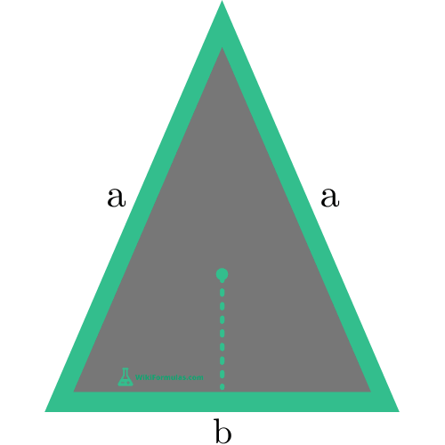

Esta calculadora te ayudaremos a encontrar el área y el perímetro de un tríangulo isósceles, además a esto en el siguiente parrafo puedes ver cuáles fueron las formulas usadas para poder hallar estas medidas
- Perimetro: ladoA + LadoB + Base
- Área: (Base x Altura) / 2